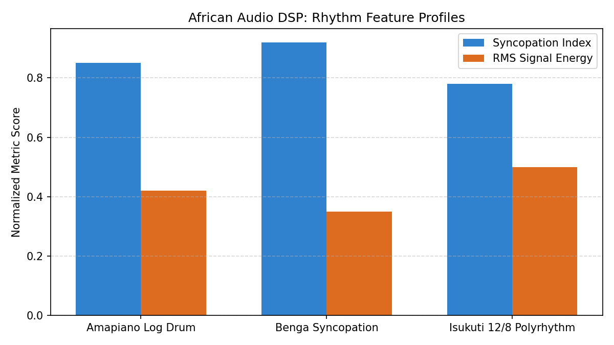
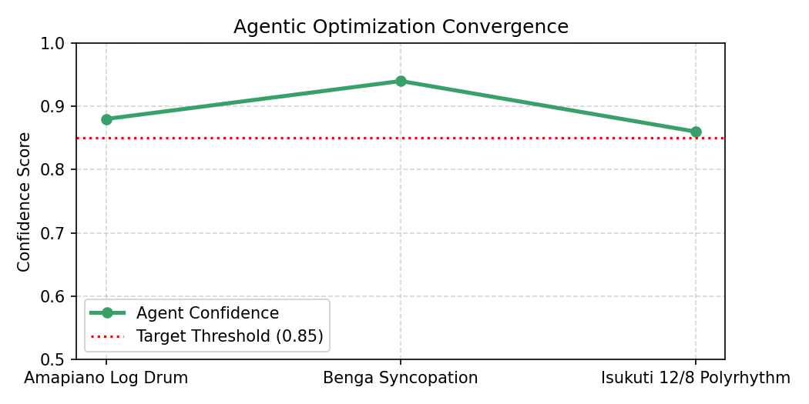

Engine Mode
Agentic Dynamic
Audio Format
16-bit PCM WAV
Active Stems
3 Polyrhythms
🎧 Interactive Audio Stem Previews
Benga Syncopated Guitar Stem
Syncopation Index: ~0.92
Benga Style
Fast-paced off-beat picking pattern simulating traditional Luo Benga guitar syncopation. Demonstrates high spectral density and rapid energy onset variations.
Amapiano Log Drum Stem
Syncopation Index: ~0.84
Amapiano Style
Sub-bass log drum pitch slide emulation. Features low-frequency energy envelopes and micro-timing offsets targeted by the agentic threshold optimizer.
12/8 Isukuti Polyrhythm Stem
Syncopation Index: ~0.78
Isukuti 12/8
Traditional Luhya Isukuti triplet bell and drum interlocking percussion in 12/8 time signature. Tests off-beat peak identification across non-quantized grids.
📊 Live DSP Telemetry
Rhythm Feature Profiles
Normalized comparison between Syncopation Index scores and short-time RMS signal energy across synthetic audio stems.

Agentic Optimization Convergence
Convergence trajectory showing the self-correcting agent adjusting detection sensitivity to maintain confidence above target threshold (≥ 85%).
